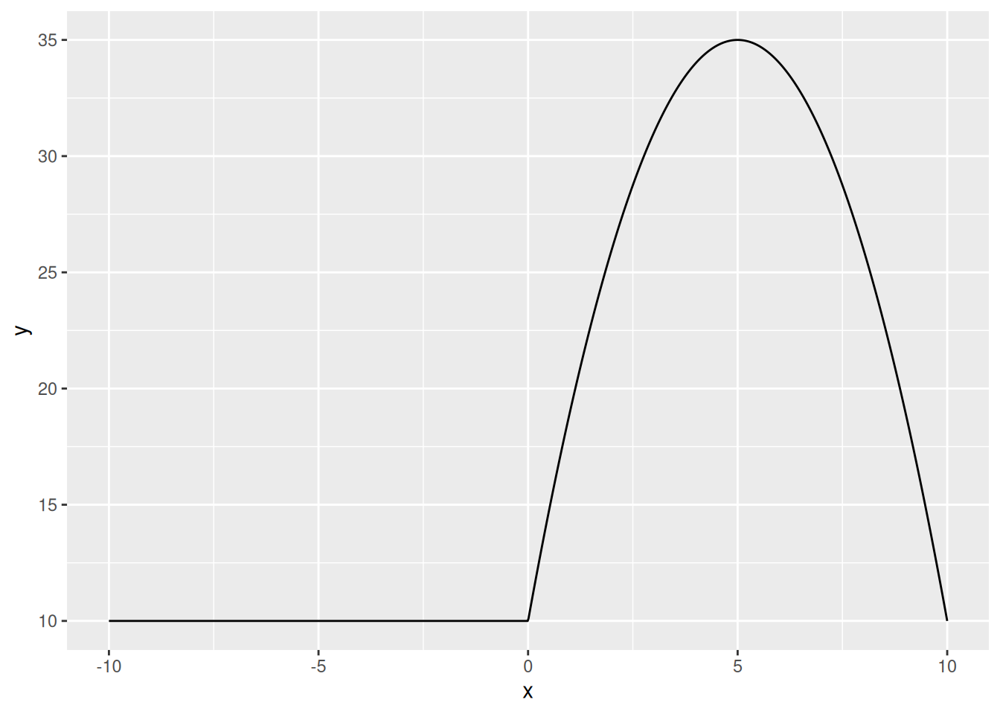
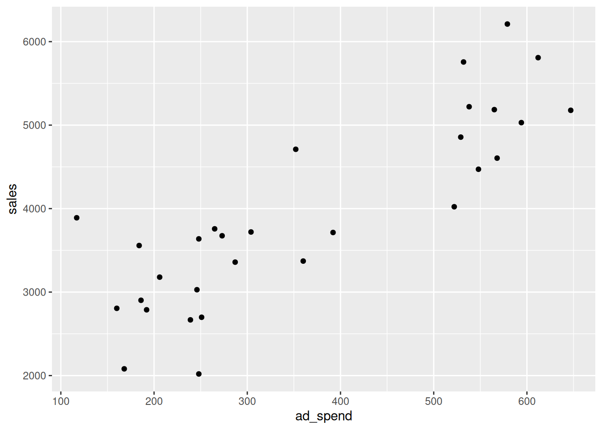

(exp(2) - 10) / (7 * sqrt(3))[1] -0.215347
Write an R command that calculates the following:
\frac{e^2 - 10}{7\times\sqrt{3}} Provide both the numerical answer and the R command.
Answer:
(exp(2) - 10) / (7 * sqrt(3))[1] -0.215347Write an R command that calculates \log_3\left(27\right)
Provide both the numerical answer and the R command.
Answer:
log(27, base = 3)[1] 3If we create the following vector in R, what class will it be?
c(1, 2, TRUE, FALSE)Note: You do not need to supply your code for this question.
Answer: Numeric.
Write an R command that generates a numeric vector containing the following sequence:
(100, 99, 98, \dots, 3, 2, 1, 100, 99, 98, \dots, 3, 2, 1) The resulting vector could contain 200 elements.
Answer:
rep(100:1, times = 2) [1] 100 99 98 97 96 95 94 93 92 91 90 89 88 87 86 85 84 83
[19] 82 81 80 79 78 77 76 75 74 73 72 71 70 69 68 67 66 65
[37] 64 63 62 61 60 59 58 57 56 55 54 53 52 51 50 49 48 47
[55] 46 45 44 43 42 41 40 39 38 37 36 35 34 33 32 31 30 29
[73] 28 27 26 25 24 23 22 21 20 19 18 17 16 15 14 13 12 11
[91] 10 9 8 7 6 5 4 3 2 1 100 99 98 97 96 95 94 93
[109] 92 91 90 89 88 87 86 85 84 83 82 81 80 79 78 77 76 75
[127] 74 73 72 71 70 69 68 67 66 65 64 63 62 61 60 59 58 57
[145] 56 55 54 53 52 51 50 49 48 47 46 45 44 43 42 41 40 39
[163] 38 37 36 35 34 33 32 31 30 29 28 27 26 25 24 23 22 21
[181] 20 19 18 17 16 15 14 13 12 11 10 9 8 7 6 5 4 3
[199] 2 1Or alternatively:
rep(seq(from = 100, to = 1, by = -1), times = 2) [1] 100 99 98 97 96 95 94 93 92 91 90 89 88 87 86 85 84 83
[19] 82 81 80 79 78 77 76 75 74 73 72 71 70 69 68 67 66 65
[37] 64 63 62 61 60 59 58 57 56 55 54 53 52 51 50 49 48 47
[55] 46 45 44 43 42 41 40 39 38 37 36 35 34 33 32 31 30 29
[73] 28 27 26 25 24 23 22 21 20 19 18 17 16 15 14 13 12 11
[91] 10 9 8 7 6 5 4 3 2 1 100 99 98 97 96 95 94 93
[109] 92 91 90 89 88 87 86 85 84 83 82 81 80 79 78 77 76 75
[127] 74 73 72 71 70 69 68 67 66 65 64 63 62 61 60 59 58 57
[145] 56 55 54 53 52 51 50 49 48 47 46 45 44 43 42 41 40 39
[163] 38 37 36 35 34 33 32 31 30 29 28 27 26 25 24 23 22 21
[181] 20 19 18 17 16 15 14 13 12 11 10 9 8 7 6 5 4 3
[199] 2 1The logical vectors a and b have equal length. Which of the following options is always the same as !a & !b, regardless of the contents of a and b?
!(a | b)a | ba & b!(a & b)Note: You do not need to supply your code for this question.
Answer: !(a | b)
To see this, we can make two vectors covering every possibility:
a <- c(TRUE, TRUE, FALSE, FALSE)
b <- c(TRUE, FALSE, TRUE, FALSE)Our target output is:
!a & !b[1] FALSE FALSE FALSE TRUEWe can try the different options:
!(a | b)[1] FALSE FALSE FALSE TRUEa | b[1] TRUE TRUE TRUE FALSEa & b[1] TRUE FALSE FALSE FALSE!(a & b)[1] FALSE TRUE TRUE TRUEOnly the first one matches, so this is the correct option.
Download the dataset airfare.csv. The dataset contains information on the average number of passengers and average fares along different airline routes in the US. The variable descriptions are:
year: The year.route_id: An ID variable indicating the airline route.distance: The distance in miles traveled on the route.avg_passengers: The average number of passengers on that route in that year.avg_fare: The average price of a ticket on that route in that year (in dollars).When reading the dataset into R, assign it to df.
How many observations (rows) are in the dataset?
Provide both the numerical answer and the R command required to obtain the answer (if the dataframe is assigned to df).
Answer:
df <- read.csv("airfare.csv")
nrow(df)[1] 4596What is the median of the variable avg_fare?
Provide both the numerical answer and the R command required to obtain the answer (if the dataframe is assigned to df).
Answer:
median(df$avg_fare)[1] 168In 1997, how expensive was the route with the highest average fare?
Provide both the numerical answer and the R command required to obtain the answer (if the dataframe is assigned to df).
Answer:
max(df$avg_fare[df$year == 1997])[1] 460What is the average fare on route 66 over the years 1997-2000? That is, for route 66, what is the average of the avg_fare variable?
Provide both the numerical answer and the R command required to obtain the answer (if the dataframe is assigned to df).
Answer:
mean(df$avg_fare[df$route_id == 66])[1] 101How many routes in the dataset in 1997 involve a distance exceeding 2500 miles?
Provide both the numerical answer and the R command required to obtain the answer (if the dataframe is assigned to df).
Answer:
sum(df$distance[df$year == 1997] > 2500)[1] 22Download the dataset admissions.csv. The dataset contains student applications records for a university. The raw dataset contains 157 observations. It contains the following variables:
Age: The age of the applicant.Gender: The gender of the applicant.Admission Test Score: The applicant’s score out of 100 in an entrance exam.High School Percentage: The applicant’s average high school grades out of 100.Admission Status: Whether the applicant was accepted or rejected to the university.Using the following template script to clean your data according to the 7 steps below and to answer the 3 questions that follow: 2024-exam-block-3-template.R.
NA values. You should be left with 127 observationsAge is negative. You should be left with 122 observations.Gender is equal to "". You should be left with 113 observations.Admission.Test.Score is negative or larger than 100. You should be left with 111 observations.High.School.Percentage is negative or larger than 100. You should be left with 109 observations.Admission.Status is equal to ““. You should be left with 103 observations.age, gender, admission_test_score, high_school, admission_status.When reading the dataset into R, assign it to df. If you did all the steps correctly, you should have 103 observations remaining and the average of the admission_test_score variable should be 76.95146. The output of head(df, n = 3) should appear like this:
age gender admission_test_score high_school admission_status
1 24 Female 50 68.90 Rejected
4 17 Male 55 85.29 Rejected
8 20 Female 82 55.67 AcceptedAnswer:
df <- read.csv("admissions.csv")
df <- na.omit(df)
df <- df[df$Age >= 0, ]
df <- df[df$Gender != "", ]
df <- df[df$Admission.Test.Score >= 0 & df$Admission.Test.Score <= 100, ]
df <- df[df$High.School.Percentage >= 0 & df$High.School.Percentage <= 100, ]
df <- df[df$Admission.Status != "", ]
names(df) <- c("age", "gender", "admission_test_score", "high_school",
"admission_status")In the cleaned dataset, what is the mean of the variable high_school?
Assign the output of this command to the variable a11 in your script and write its numerical value in the box below.
Answer:
a11 <- mean(df$high_school)
a11[1] 77.35864In the cleaned dataset, what is the acceptance rate of the university? That is, what proportion of observations have the admission status "Accepted"?
Your answer should be between 0 and 1.
Assign the output of this command to the variable a12 in your script and write its numerical value in the box below.
Answer:
a12 <- mean(df$admission_status == "Accepted")
a12[1] 0.4854369In the cleaned dataset, what is the highest admission test score among applicants that are 17 years old?
Assign the output of this command to the variable a13 in your script and write its numerical value (without the % symbol) in the box below.
Answer:
a13 <- max(df[df$age == 17, ]$admission_test_score)
a13[1] 96The following 3 questions will involve working with the following mathematical function defined over all real numbers x:
f(x) = \begin{cases} 10 & \text{ if } x < 0 \\ -x^2 + 10x + 10 & \text{ otherwise} \end{cases}
Plot the function between the x values -10 and +10. Choose the answer below which best describes the shape of this function:
Tip: Define the function f using the ifelse() function.
Note: You do not need to provide R code for this question.
Answer:
f <- function(x) {
ifelse(x < 0, 10, -x^2 + 10*x + 10)
}
library(ggplot2)
x <- seq(from = -10, to = 10, length.out = 1000)
y <- f(x)
df <- data.frame(x, y)
ggplot(df, aes(x, y)) + geom_line()
Write an R command that finds the value of x that maximizes this function in the interval [0, 100].
Write the numerical value of the output of this command in the box below.
Answer:
optimize(f, interval = c(0, 100), maximum = TRUE)$maximum[1] 5Write an R command that finds the value of the function f(x) at its maximum value.
Write the numerical value of the output of this command in the box below.
Answer:
optimize(f, interval = c(0, 100), maximum = TRUE)$objective[1] 35Download the two datasets:
state, region and sales. The dataset contains the sales (in thousands of dollars) for a company from 2023 in 30 US states and their corresponding region.state, and ad_spend. The dataset contains the advertising expenditure (in thousands of dollars) for the same company in 2023 in the same 30 US states as the sales data.Assuming the sales-by-state-2023.csv dataset has been read into R as df1, write an R command in the box below that finds the average sales by region. The output of your command should be:
region sales
1 North Central 3818.535
2 Northeast 4488.667
3 South 2973.121
4 West 5484.096Answer:
df1 <- read.csv("sales-by-state-2023.csv")
aggregate(sales ~ region, FUN = mean, data = df1) region sales
1 North Central 3818.535
2 Northeast 4488.667
3 South 2973.121
4 West 5484.096Merge the datasets sales-by-state-2023.csv and ad-spend-by-state-2023.csv by the variable state. Use ggplot to create a scatter plot with ad_spend on the horizontal axis and sales on the vertical axis. Choose the answer below which best describes how to interpret this plot.
Answer:
df1 <- read.csv("sales-by-state-2023.csv")
df2 <- read.csv("ad-spend-by-state-2023.csv")
df <- merge(df1, df2, by = "state")
library(ggplot2)
ggplot(df, aes(ad_spend, sales)) + geom_point()
Correct option: Where ad expenditure is low, sales tends to be low. Where ad expenditure is high, sales tends to be high.
Create the following dataframe using the command below:
df <- data.frame(id = 1:3, x = c(4, 2, 7), y = c(6, 3, 8))The dataframe df should look like this:
id x y
1 1 4 6
2 2 2 3
3 3 7 8Assuming the reshape2 package has been correctly loaded with the command library(reshape2), write a command in the box below that will transform df to the following:
id variable value
1 1 x 4
2 2 x 2
3 3 x 7
4 1 y 6
5 2 y 3
6 3 y 8Answer:
df <- data.frame(id = 1:3, x = c(4, 2, 7), y = c(6, 3, 8))
library(reshape2)
melt(df, id.vars = "id") id variable value
1 1 x 4
2 2 x 2
3 3 x 7
4 1 y 6
5 2 y 3
6 3 y 8